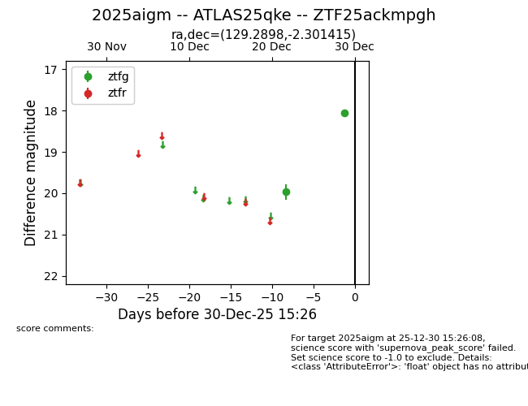
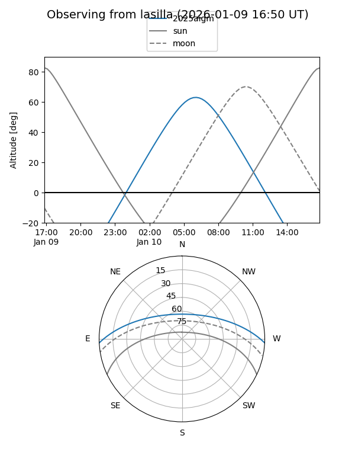
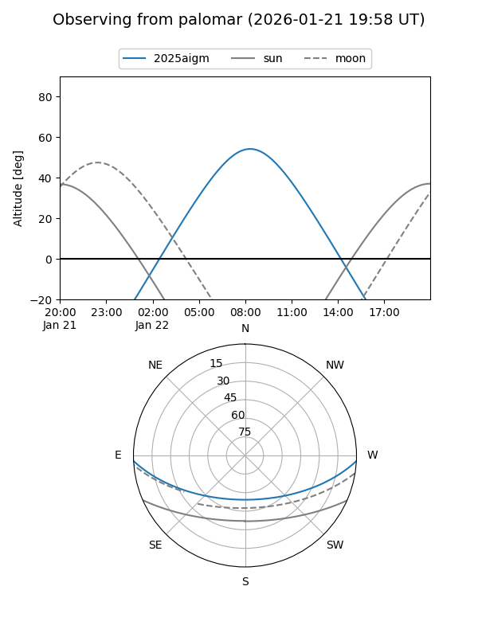

2025aigm
Target 2025aigm at 2025-12-30 09:11
Aliases and brokers:
FINK: fink-portal.org/ZTF25ackmpgh
Lasair: lasair-ztf.lsst.ac.uk/objects/ZTF25ackmpgh
ALeRCE: alerce.online/object/ZTF25ackmpgh
TNS: wis-tns.org/object/2025aigm
YSE: ziggy.ucolick.org/yse/transient_detail/2025aigm
alt names
ZTF25ackmpgh (ztf,fink_ztf)
2025aigm (tns,yse)
ATLAS25qke (atlas)
Coordinates:
equatorial (ra, dec) = 129.2898,-2.30142
equatorial (HMS+DMS) = 08:37:09.54,-02:18:05.09
galactic (l, b) = (227.8595,+22.17959)
Flags:
Photometry:
last ztfg=18.06
2 ztfg detections
Lightcurve

Visibility


Additional plots